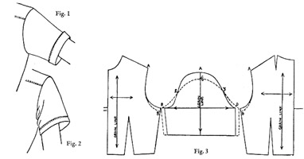
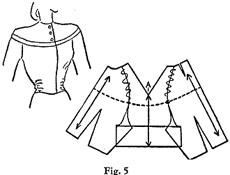

1942—Modern Pattern Design
by Harriet Pepin
Chapter 5—Adapting Patterns
Analysis of Garments for Utility Purposes
Newspapers, fashion magazines and other periodicals print reams about the importance of the proper selection of clothing. Not only must the garment be selected for its becomingness to the wearer, but it should be appropriate for its specific use. The fabric must be appropriate and the cut of the garment must be correct as well. Stores divide their departments to make shopping easier for the customers. Buyers in each department select the clothes to meet the needs of customers who come to their special departments. Salespeople are trained to sell certain types of clothing which have been designed to meet certain needs.
Likewise, the designer becomes specialized. Manufacturing plants specialize. This makes it easier for them to make a profit in that one certain type of apparel. In a general sense, clothing falls into three basic classifications, namely: Active Sports, Spectator Sports or business casuals and Social Clothes. These three classifications are subdivided according to sizes, such as Juniors, Misses and Women's clothing. They are each again subdivided into specific price ranges. Children's clothing manufacturers are specialists in a more general sense and may design all types of children's apparel for all occasions and at varying price ranges. In recent years, however, the children's clothing reflects these three major classifications under the names of Play clothes, School clothes and Party clothes.
The three blouses above illustrated show how a similar basic design may be adapted for any one of the three basic classifications with but a few minor changes. Fig. 1 shows the pattern used for an active sports garment. The sleeve used is called the "action" sleeve which is explained later in this text. The collar is a convertible type which may be worn open or closed. The pocket is amply large to hold the golf score card or sun glasses. It is, in this form, a strictly functional active sports garment designed to meet the needs of an active sports woman.
Fig. 2 shows the same basic design changed to meet the need of the business girl for a simple business dress. The single dart has been changed to a group of three for further design interest; the functional pocket has become more ornamental than useful; and the sleeves have been made from the basic sloper with moderate extra width provided to meet fashion requirements. Decorative cuffs have been added. If made up in jersey, the garment might be classified as "spectator sports." If made of coarse lace, it might be the tailored "afternoon" dress. In dark silk or sheer wool, with an extra over-lay white collar, it becomes the "business" dress. And, if made of a gold metallic, it might be part of an informal "dinner" dress. It could even be used as the top for casual slack suits.
Fig. 3 is obviously dressy. Made of sheer fabric, with lace trim, it loses its trim appearance immediately. We cannot visualize it in the business office or on a golf course. The use of gathers instead of darts has changed its trim appearance also. It becomes a "social" piece of apparel. Its usefulness in the wardrobe becomes limited.
Adjustments of Armscye and Sleeve Cap for Utility Purposes
The typical action sleeve appears in golf dresses, riding shirts, tennis togs and other garments which require functionalism before style. The change is in the sleeve cap which is shortened and widened to change the "hang" of the sleeve. The sleeve appears at its best when the arm is raised and the added material shows up in wrinkles when the arm hangs at the side. Except when used for beauty parlor or waitress uniforms which require close fitting sleeves, sleeve is sometimes widened and armscye lowered to provide extra ventilation.
When a designer has patiently developed an especially fine sleeve cap and bodice armscye (which is an important point of style in any garment) he may, if his design reveals an entirely new cut, patent it. Usually it is then given a trade-name such as "Free-Swing" or "Full-Action" and then all garments which include that feature are labeled accordingly. In this text, this type of sleeve is classified as an "action" sleeve merely to identify it in the mind of the reader.
Procedure given here includes the method used to lower an armscye but in many cases the adjustment is made in the sleeve cap only which would then be set into the normal size armscye. Once a good fit has been established, a sloper should be made for convenience in the designing studio.
1. Arrange front and back bodice and sleeve pattern as shown on guide line.
2. Lower front and back armscyes 1 inch (this may vary).
3. Widen sleeve an equal amount on both sides.
4. With tape measure, determine size of new armscye —measure back and front.
5. New sleeve cap B-C-D must equal size of new armscye. Start from B, measure through point 2 to locate C at a point equal to front armscye. Repeat for back.
6. Re-establish notch at new point C.
Because shortening sleeve cap removed all ease at shoulder, if extra fabric is not provided at B-2 and D-3, arm would be held in vice-like grip. Pattern makers used to think lowering armscye and also widening bodice was necessary. This only sacrificed fit. If more ease is desired in bodice, it should be added over vertical line of bust and the basic dart enlarged as a result. An inverted pleat in center back will provide extra reaching room without spoiling the trim fit under the arm.
Modified versions can be produced by removing only part of ease at the top of cap and lines 2-B and C-D will have more curve. Complete a muslin test proof of bodice and baste in sleeve. Observe results.
When used in a better type riding shirt, this functional sleeve has a short cap cut and shaped to fit a tight armscye. This permits utmost arm freedom and lessens any tendency of the shirt to work up. The close fitting armscye also eliminates bulk under the riding coat (similarly designed to provide freedom). So carefully designed a shirt, painstakingly perfected, is well worth the premium paid for it.
Padding a Shoulder
Modern fashion, between the years of 1936 and 1941, favored the use of padding in many types of garments. It has been used in mannish type coats for many years, but during that period it appeared in all types of dresses, slack suits and some active sports apparel.
When garment is designed to use padding, shoulder seams should be built up a proportionate amount to enclose the thick padding and still maintain a close, smooth fit. This also requires a small adjustment at top of sleeve cap. The armscye, in being raised, is being increased in size at the top. Hence, the sleeve cap is raised until it equals the new dimension of the armscye. The normal ease is still required unless the shoulder seam is also being moved outward beyond the normal shoulder joint. In such cases, muslin must be used repeatedly to secure the perfect sleeve for the new armscye.
Enlarging the Sleeve
Coat manufacturers usually make their garments which are marked size 16 from a sloper which has been graded up a half size or more in width to provide room for a dress to be worn beneath. Armscyes on the garment are enlarged and the sleeves inserted may be a full size larger. Occasionally fashion dictates close fitting bodices in dresses but large armscyes are used with large sleeves. The increase in the sleeve is made throughout to insure good proportions but the length remains unchanged. The new enlarged sloper would be designed and then all coat or dress sleeves that season would be made by using that new block.
There are two important changes which must be made in the sleeve to adjust it to fit the newly enlarged armscye: (1) enlarging the sleeve in biceps measurement; (2) lengthening the sleeve cap by lowering position of biceps line.
Read the following steps of procedure carefully. Check each step with the diagrams shown above.
1. Draw a vertical guide line equal to overarm sleeve length plus three inches.
2. Place folded sleeve sloper upon this guide line with vertical grain line meeting it.
3. At shoulder and wrist positions on your paper, place two short parallel lines one-fourth inch away from guide line.
4. Shift sloper to right until grain line and short measuring lines fall in exact line. Trace back of sleeve. Fig. 1.
5. Trace lower half of sleeve cap with sloper still in this position. Fig. 2.
6. Reverse this process by shifting sloper to similar position to the left. Figs. 3 & 4.
7. Locate new biceps line position by placing point D below C an amount equal to the amount armscye was lowered in bodice. Fig. 4.
8. Complete new lowered armscye in sleeve by tracing as shown in Fig. 5. Blend the new lines from D-3 and D-2.
NOTE: This procedure closely resembles pattern grading except for the fact that this sleeve is not being lengthened in proportion to its new width. But observe that the foregoing procedure has increased the sleeve proportionately throughout. To merely enlarge a sleeve pattern at each side would result in a failure in the finished garment. The amount of increase must be based upon the increase made in the armscye. (Step #7)
Novelty Shoulders
Up to this point, your analysis of sleeves and bodices has dealt with the normal or nearly normal armscye. Although the greater portion of garments provide for the use of a normal armscye, yet the Strap Shoulder, Raglan, Kimono and Dolman styles are of sufficient basic importance to be included in the basic study of pattern designing. As have been the cases mentioned previously, when fashion favors armscye and shoulder variation, designers set about to produce an excellent fitting basic pattern for one or more of these recognized cuts and then devise many new designs through the use of each or any of them.
One factor must be kept in mind. Even though the normal armscye is removed, the space which would have been provided in the garment having a normal armscye must also be provided in the garment having a novelty shoulder. The wearer has not changed, even though the garment has. She must still move her arms and the completed garment must have control provided in some way. A loose Dolman is truly ugly if badly cut while a well cut Dolman produces excellent fit in all portions of the garment even though the garment may appear to be quite unfitted around the armscye.
The time required to develop a pattern for some novelty shoulder is well invested. The basic Raglan or Dolman, once perfected, may—like the simple sleeve or bodice sloper—be slashed to permit fullness, divided into secondary seams for design interest, or appear in countless adaptations. Many experienced designers have not yet mastered the basic principles involved in producing well fitted strap or Dolman shoulders. Their garments may look attractive on the hanger, but bind uncomfortably when worn. Each of the following basic novelty shoulders involves a different principle in shaping the fabric to that armscye area. Each provides a different means of so adjusting fit in that area that the main garment retains the fit originally developed in the basic sleeve and bodice sloper.
 The Strap Shoulder
The Strap Shoulder

This style of sleeve removes the seam at the upper armscye and takes from the bodice a section which is cut in one with the sleeve. Its simple name is taken from the design of the cut but is sometimes given the French name epaulette meaning shoulder-piece.
When making this pattern for a garment which has the normal sleeve which provides ease at the shoulder, the slight gathers which normally would be placed near the bodice shoulder seam must be shifted downward as none of the ease can be placed in the strap area. In order to absorb that fullness, the fabric should have shrinkage quality. Therefore, this design is found in garments using the action sleeve cap or a modification of it which reduces the normal amount of ease.
On average sizes, the strap should not be more than 3 inches wide. Other similar cuts which employ yoke-like straps are cut differently.
The diagram on the following page illustrates the usual method for making such a novelty shoulder. Read each step carefully. Note that diagram shows the pattern made from the action sleeve. A similar procedure would be used if the normal sleeve sloper were to be employed.
1. Draw a horizontal guide line on a piece of final pattern paper and place front and back bodice sections together with shoulder seams meeting as shown above.
2. Draw in position of sleeve strap, not to exceed three inches in width for a size 16 pattern.
3. Lay the sleeve as illustrated with the grain line resting upon the guide line.
4. Trace around the sleeve and remove it. With your red pencil, mark out the sleeve, together with the strap section: A-B-C-D-E-F-G-H-A.
5. Mark notches and a guide line.
6. Slip a second piece of pattern paper beneath the draft and trace off the sleeve-strap pattern. Add seam allowances to this portion.
7. Add seam allowances to the remaining bodice portions and cut them out. Your pattern should appear as illustrated.
Select many examples of this style of cut. Although the strap is usually of plain design, there is no obvious reason why some design could not be created which might make it a focal point of interest in a garment. A strap seam design was used as the basis for producing many interesting wide shouldered gowns during 1939 to 1941 when wide shoulders were in fashion.
The Raglan Shoulder
The story is told that the Raglan shoulder was originally designed by an English nobleman who had suffered an injury in his arm and in order to have a comfortable top coat, this shoulder was designed for him. It first appeared in men's overcoats and gradually in women's sports coats and gradually it began appearing in blouses and dresses. From 1935 until 1941 it disappeared in women's dresses and coats with the exception of some loose sports coats because it did not reflect the exaggerated shoulders in fashion during that time. In 1941, when the shoulders assumed more of a natural silhouette, with a rounded padding, it again appeared along with the Kimono and Dolman. People having sloping shoulders can be easily fitted to the Raglan styles but, as it has a tendency to emphasize the feeling of sloping shoulder, it is not best suited to such individuals. Research work of later years has improved the Raglan until now it can be made from the normal sloper which provides ample shaping at the top of the sleeve cap.
There are two basic types of Raglan—the close fitting style and the loose, Dolman-like style. The close fitting style requires more care to produce so it is given here. The variations appear in later charts. To produce the close fitting style, the arm-scye is lowered and sleeve widened as diagramed on page 124 devoted to "Adjustments of the Armscye."
1. Draw a vertical guide line on your pattern paper and place sleeve sloper upon it as illustrated. Trace around sleeve sloper and lift it away.
2. Mark positions 2 and 3 on bodice slopers. (They are same distance from side seam that points 2 and 3 are from base of sleeve cap on the sleeve sloper.)
3. Place back and front bodice slopers as shown, with points 2 and 3 meeting. Shift them around into such position that points C and D are an equal distance from point K which is located 1/2 inch below point A on sleeve tracing. Trace around them and remove. Then connect points C and D with point K with dotted lines.
4. Lower armscye on front and back bodice drafts one inch. (This may vary with circumstances.) Widen biceps of sleeve a proportionate amount on each side and blend in lines to elbow and to points 2 and 3.
5. G-2 should equal E-2. F-3 should equal H-3.
6. Sketch in Raglan lines 2-1 and 3-J, to form compound curves with 2-E and 3-F.
7. Slip paper under draft and trace off sleeve section: L-G-2-I-C-K-D-J-3-H-M-L.
8. On another piece, trace off front bodice: N-I-2-E-P-O-N. Also back: Q-J-3-F-S-R-Q. Add seam allowances, notches et cetera and cut out these patterns. Make muslin for half a bodice.
NOTE: When drafting Raglan from personal slopers having unusual proportions, there may be some points where draft will not appear like the diagram above. The main points to consider are that C-A-D forms a dart. And between points 2-3 represents upper arm measurement. On close fitting styles, the Raglan lines should not fall more than an inch above or below points 2 and 3. Generous seam allowances should be provided on muslin so the adjustments can be made on the individual being fitted.
The Kimono Shoulder
The true "Kimono" shoulder has no fitting whatsoever. It is a straight piece of fabric with a hole cut for the neck. However, the shaped Kimono garment above reflects its Chinese influence but produces a more pleasing fit.
1. Place bodice slopers to meet at A-B with C and D apart 1/2 inch.
2. Fold sleeve cap of pattern back and lay on above tracing making G-E and F-H equal. Mark short curves identically at points G and H.
3. Draw seam line A-I to fall in center of wrist. Disregard where line falls to C or D. Place notch on the new seam line. Cut the pattern apart. Locate grain lines as shown and mark up muslin into stripes. Cut center front and back on folds of fabric. Observe results.
NOTE: Seam at shoulder is used on some occasions and in other instances the seam is thrown to the center back or front. In order for you to study the possibilities for creating interesting effects, place seam at center back and cut center front on a fold of muslin marked horizontally. Try the same results on vertical striped fabric. Gusset can be used to give greater elasticity underarm. No curve would be established at points G and H in such case.
The Dolman Shoulder
Sections are arranged as for Kimono except that Dolman has no seam down sleeve.
Because low armscye limits reaching room under arm area E-G-C and F-H-D is added to the sleeve.
Lines E-G and F-H must equal E-C and F-D respectively. G-I and H-J should also be equal as they will meet as a seam.
NOTE: Original points E and F divide the new armscye equally. Experiment has proved this to produce the better appearing garment. Position of armhole line is important to a pleasing result.
Take tracing of the new sleeve on a second sheet of paper: K-I-G-E-A-F-H-J-L-B-K
Trace off pattern for front and back bodice section. New low armscye is defined by dotted line: C-E-A-F-D. Shoulder seam may be introduced from A to I, if desired.
PRACTICE PROBLEMS
Fig. 1 shows the use of the strap sleeve with a boxy type sleeve illustrated previously. The sleeve pattern is completed first and then it is used with the bodice to complete the strap design. Hence, the space between the pleats on the sleeve should not exceed maximum three inches normally allowed for the strap. Note how exaggerated yoke line extending into the boxy sleeve broadens the figure. It is important that width of silhouette be kept to a moderate proportion or finished garment will have too physical an appearance.
Fig. 2 is cut on the principle of the Raglan which produces the shoulder dart which takes the place of normal slanted shoulder seam. Basic pattern is produced and then sleeve is cut at lines extending to points 2 and 3 and straight pleats added which fold into position at the point where lower armscye of bodice meets the lower cap of sleeve. Many pleasing designs may be produced with varying lines through the use of the Raglan principle. It offers fewer limitations than the strap seam shoulder.
Fig. 3 shows the Dolman-Raglan sleeve. The method combines the two basic cuts you have just studied. A modification of this combination sleeve is adapted for swagger type sports coats, fur coats and dinner gowns. This style gives bulk to the figure and unless it is combined with a narrow hip line and skirt, it is reserved for the very tall and slender person. During 1941, this style reappeared with the gradual return of the molded shoulder line. A slight padding was used at the shoulder to produce the favorite "molded" appearance of that year.
Fig. 4
4 illustrates the method for giving a broad-shouldered appearance to
the sloping Raglan. By building up the seam at A and B, padding could be added
in the garment and the sleeve enlarged at the same time. The sleeve, in this
case was straightened into the conventional style coat sleeve. It could be
left fitted at the wrist as desired or widened into a Bell sleeve if fashion
favored such a silhouette.
illustrates the method for giving a broad-shouldered appearance to
the sloping Raglan. By building up the seam at A and B, padding could be added
in the garment and the sleeve enlarged at the same time. The sleeve, in this
case was straightened into the conventional style coat sleeve. It could be
left fitted at the wrist as desired or widened into a Bell sleeve if fashion
favored such a silhouette.
To produce more exaggerated bulge at the armscye, pattern may then be slashed and spread as indicated below. At the seam which joins sleeve to the body of garment, this extra fabric added by spreading would be eased in. This would produce an exaggerated bulk of silhouette to the sleeve. Watch closely for such sleeves found in men's overcoats.
Fig. 5 shows method for developing a yoke design from a raglan style sloper. Curved lines indicate seams eliminated. Dart at A could be extended to form shoulder seam for the yoke area.
Fig. 6 illustrates method for producing a simulated yoke. Note arrow extending from new yoke line to bust point. A portion or all of the control could be shifted. This would throw armscye bodice area downward and would produce room for the seam to join yoke to gathered area. Same procedure could be used for shifting some of back bodice waistline control.
Fig. 7 diagrams method which might be used to produce a deep yoke to which additional fullness has been added in shoulder areas. Note that dotted lines of the front and back bodice yoke fall over points of basic darts. This makes it possible to eliminate both of these darts by shifting the control into the seam. When sleeve section has been traced off, slashes are made to add degree of fullness desired.
NOTE: Many combinations of this type may be developed once the pattern designer is familiar with all basic principles common to the producing of a given silhouette or design. The degree of variation is unlimited.